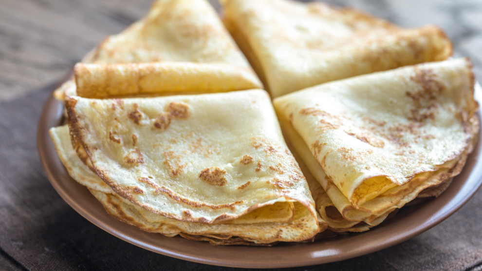

Malawax

Description
Malawax is a sweet, thin, and delicate Somali pancake that's similar to a crepe. It's often eaten for breakfast or as a snack.
Ingriedents
- 2 cup plain flour
- 2 eggs
- 1 and half cups milk
- 1 and half cups water
- 4 tablespoons melted butter
- 1 teaspoon ground cardamom
- honey for serving
Instructions
- In a blender combine flour, egg, milk, water, cardamom, salt and the butter, and blend until smooth
- Cover and set a side for 30 minutes
- Heat a non stick pan over medium heat and brush lightly with oil or butter
- Pour a little batter into the pan swirling to thinly cover the base
- Cook until crepes are golden underneath about one to two minutes
- Spread little oil or butter so that the crepes don't stick to the pan
- Then turnover and on the other side, repeat with the remaining batter
- Transfer into a plate and serve warm with butter and honey